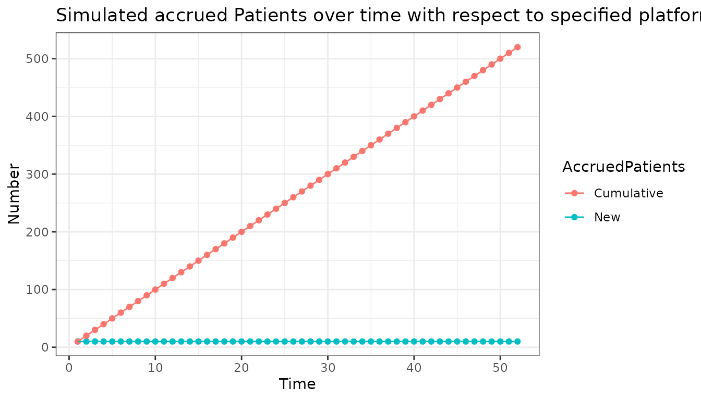
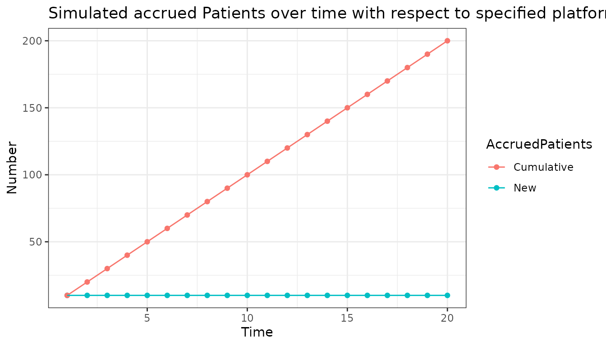
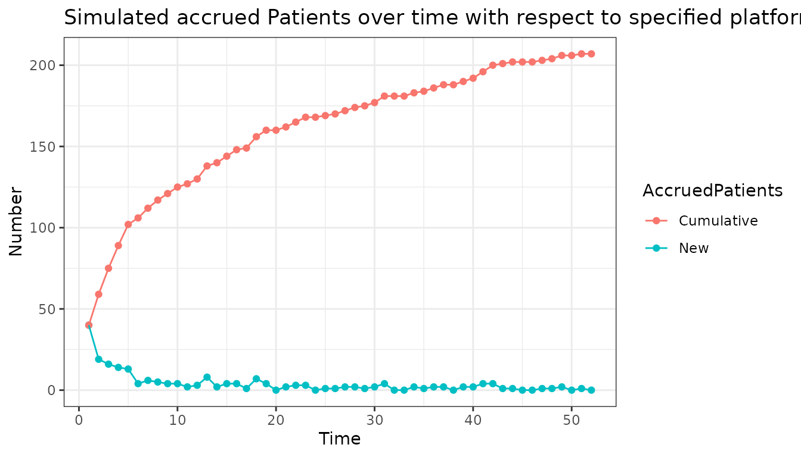
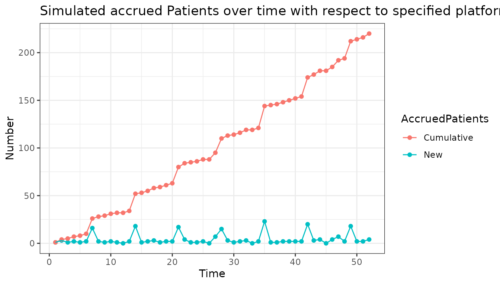
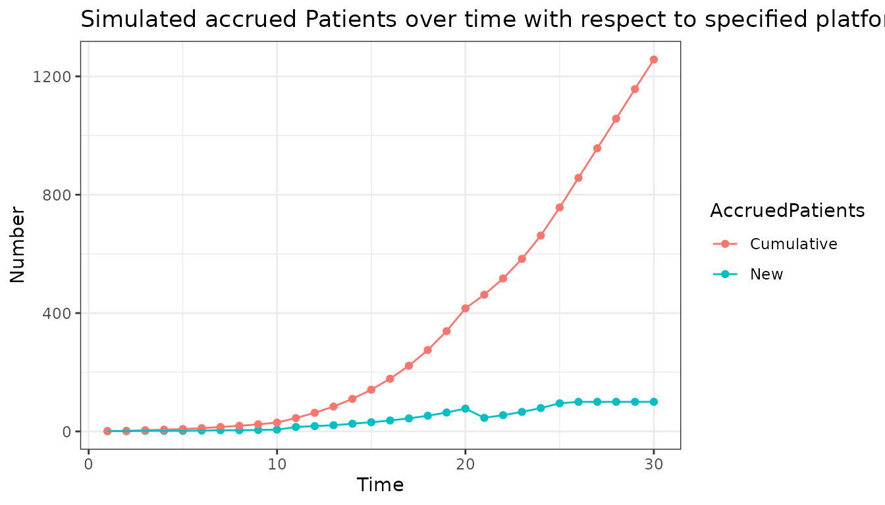
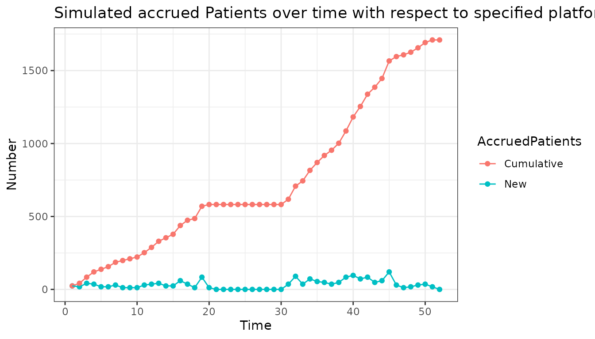
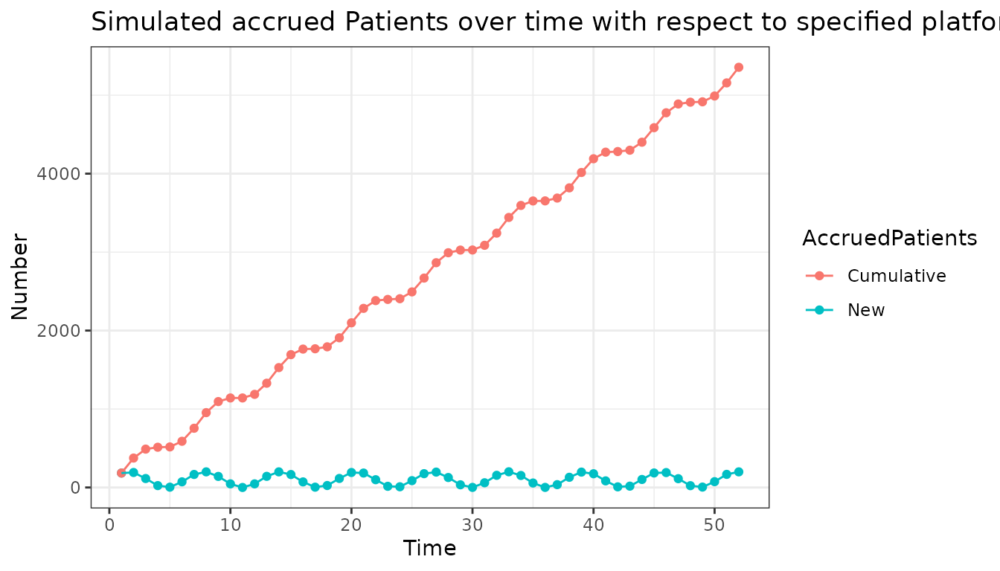
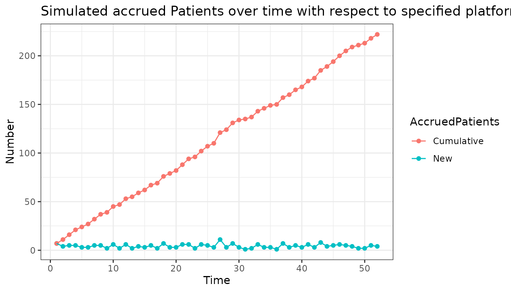
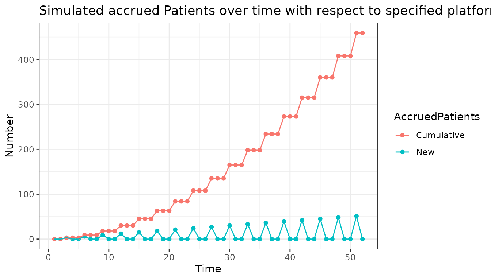
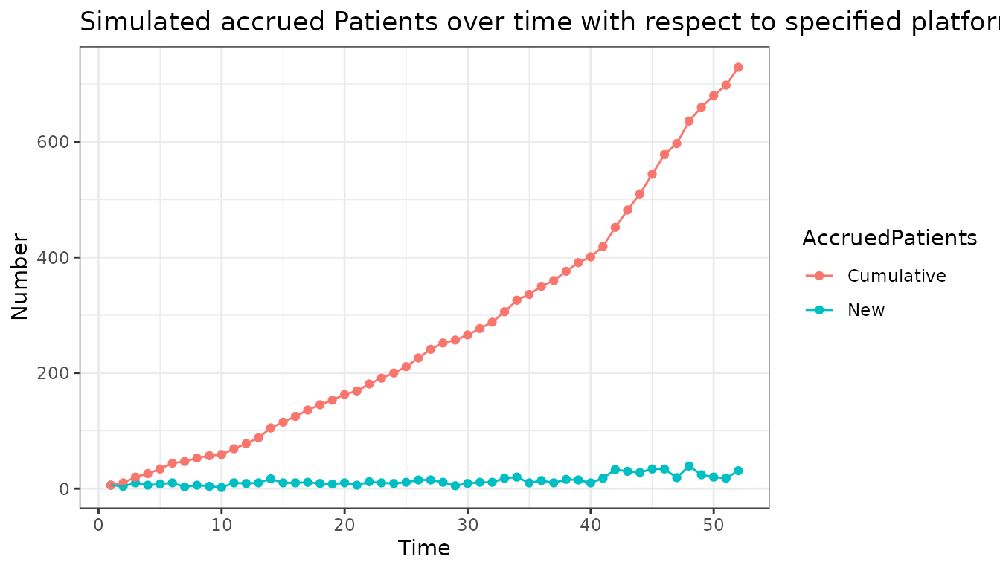

Introduction
This vignette aims to describe the recruitment module lRecrPars of the simple package. The purpose of the module is to control the recruitment of patients over time.
Function arguments
As input variables to determine the patient accrual at time t, the module will take the platform trial status at time t, as well as arguments specific to the patient recruitment.
Current status of platform trial lPltfTrial
This is a snapshot image of the current platform trial status and changes during the simulation. The current time or number of active arms could be examples of variables of interest which we would like to access.
Additional arguments lAddArgs
Apart from the trial snapshot, module specific variables can be added. Examples which are later implemented in the Examples section are:
- different fixed accruals for different points in time.
- a cap if you want to have a maximum number of patients to be recruited per time step.
- an enrollment window, if you want to prohibit recruitment for some periods.
Functions
Constructor Function
The idea is to be able to include the platform snapshot as well as any additional variable you would want to impact your recruitment.
The central function of the module is new_lRecrPars. It
defines the “rules” of recruitment you want to implement in the
simulation.
## $fnRecrProc
## function (lPltfTrial, lAddArgs)
## {
## }
## <environment: 0x55661fc640c0>
##
## $lAddArgs
## list()
##
## attr(,"class")
## [1] "lRecrPars"$fnRecrProc The necessary input is a
function fnRecrProc determining how patients are recruited
over time. In the function call you input the current platform trial
status to be used in the lPltfTrial argument and determine
the list with further arguments which affect your recruitment algorithm
in lAddArgs. Within the curly braces {} you
execute the function operations.
$lAddArgs Here you can supply the list
with additional arguments, which are accessed in the function above.
Helper function
If you do not want to think about a recruitment strategy, you can use
the helper function lRecrPars.
lRecrPars## function (nPat)
## {
## if (!(is.atomic(nPat) && length(nPat) == 1L)) {
## stop("Supplied input is not a scalar")
## }
## if (nPat != round(nPat)) {
## stop("Supplied input is not an integer")
## }
## new_lRecrPars(fnRecrProc = function(lPltfTrial, lAddArgs) {
## lAddArgs$nPat
## }, lAddArgs = list(nPat = nPat))
## }
## <bytecode: 0x55661f33cd78>
## <environment: namespace:simple>The only argument you have to enter is the number of patients added
per time step. For example lRecrPars(10) behaves the
following way:

Plot
Plotting objects created by lRecrPars or
new_lRecrPars displays the simulated accrual of patients
over time. By default the time ranges from 1 to 52. Any number of
further snapshot variables describing a specific trajectory of the
platform trial can be passed to the plot function.
For the actual plot you just call plot() with the object
you want to plot.

Any changes in snapshot variables can be specified in the plot call. If you are only interested in 20 time steps rather than 52 and want to have more than one active arm for some time steps you can call:

Note that this does not change the actual recruitment as no dependency on the number of active interventions was specified in the recruitment module.
Summary
The summary call provides information about the input you provided. It gives an overview about snapshot and additional variables as well the function that was implemented.
summary(x)## Specified accrual function:
## [1] "lAddArgs$nPat"
##
## Specified arguments:
## $nPat
## [1] 10Examples
- Fixed recruitment speed of 10 patients per time unit
The easiest way is to simply use:

summary(x)## Specified accrual function:
## [1] "lAddArgs$nPat"
##
## Specified arguments:
## $nPat
## [1] 10- Decreasing enrollment over time
# every time step draw from poisson distribution with lambda = 50 / current time
x <-
new_lRecrPars(
fnRecrProc = function(lPltfTrial, lAddArgs) {
rpois(1, 50 / lPltfTrial$lSnap$dCurrTime)
},
lAddArgs = list()
)
plot(x)
summary(x)## Specified accrual function:
## [1] "rpois(1, 50/lPltfTrial$lSnap$dCurrTime)"
##
## Specified arguments:
## list()- Enrollment where every 7th time unit more patients enter
x <-
new_lRecrPars(
fnRecrProc = function(lPltfTrial, lAddArgs) {
if(lPltfTrial$lSnap$dCurrTime %% 7 == 0) {
rpois(1, lambda = lAddArgs$lambda2)
} else {
rpois(1, lambda = lAddArgs$lambda1)
}
},
lAddArgs = list(lambda1 = 2, lambda2 = 20)
)
plot(x)
summary(x)## Specified accrual function:
## [1] "if (lPltfTrial$lSnap$dCurrTime%%7 == 0) {\n rpois(1, lambda = lAddArgs$lambda2)\n} else {\n rpois(1, lambda = lAddArgs$lambda1)\n}"
##
## Specified arguments:
## $lambda1
## [1] 2
##
## $lambda2
## [1] 20- Exponential enrollment with different number of open active arms that is capped
x <-
new_lRecrPars(
fnRecrProc = function(lPltfTrial, lAddArgs) {
min(lAddArgs$growth ^ lPltfTrial$lSnap$dCurrTime * lPltfTrial$lSnap$dActvIntr, lAddArgs$cap)
},
lAddArgs = list(growth = 1.2, cap = 100)
)
# Only simulate 30 time steps
plot(
x,
dCurrTime = 1:30,
dActvIntr = c(
rep(1, 10),
rep(2, 10),
rep(1, 10)
)
)
summary(x)## Specified accrual function:
## [1] "min(lAddArgs$growth^lPltfTrial$lSnap$dCurrTime * lPltfTrial$lSnap$dActvIntr, lAddArgs$cap)"
##
## Specified arguments:
## $growth
## [1] 1.2
##
## $cap
## [1] 100- Recruitment depends on global variable that enables recruitment only during a certain time window and additionally makes the number of patients enrolled dependent on the number of active arms
x <-
new_lRecrPars(
fnRecrProc = function(lPltfTrial, lAddArgs) {
pat <- rpois(1, lambda = lAddArgs$lambda) * lPltfTrial$lSnap$dActvIntr * 6
ifelse(lPltfTrial$lSnap$bEnrOpen, pat, 0)
},
lAddArgs = list(lambda = 4)
)
plot(
x,
dActvIntr = c(
rep(1, 15),
rep(2, 10),
rep(3, 10),
rep(2, 10),
rep(1,7)
),
bEnrOpen = c(
rep(TRUE, 20),
rep(FALSE, 10),
rep(TRUE, 22)
)
)
summary(x)## Specified accrual function:
## [1] "pat <- rpois(1, lambda = lAddArgs$lambda) * lPltfTrial$lSnap$dActvIntr * 6"
##
## Specified arguments:
## $lambda
## [1] 4- Function using sine of current time
x <-
new_lRecrPars(
fnRecrProc = function(lPltfTrial, lAddArgs) {
100 * (1 + sin(lPltfTrial$lSnap$dCurrTime))
},
lAddArgs = list()
)
plot(x)
Exercises
Below will be some tasks of increasing complexity to make you comfortable using the module and figure out difficulties.
Tasks
Try to use the module to program the following tasks according to the instructions. The solutions are given below. The examples of the vignette may serve as a helping hand. The plots below show what the plotted output could look like.
1. Create a scenario, where the number of patients recruited at every time step is taken from a binomial distribution with n = 20 and p = 0.2
x <- new_lRecrPars(
fnRecrProc = function(lPltfTrial, lAddArgs){
n_pat = rbinom(1, lAddArgs$n, lAddArgs$prob)
},
# here we define the parameters used in the function call
lAddArgs = list(
n = 20,
prob = 0.2
)
)
# the plot functions acts as a proxy for the actual simulation in which the object of class lRecrPars is used
plot(x)
2. Create a scenario where every 3rd time unit the number of patients recruited corresponds to the current time unit. In the remaining time units no recruitment happens.
x <- new_lRecrPars(
fnRecrProc = function(lPltfTrial, lAddArgs){
if(lPltfTrial$lSnap$dCurrTime %% 3 == 0){
n_pat <- lPltfTrial$lSnap$dCurrTime
} else {
n_pat <- 0
}
},
lAddArgs = list()
)
plot(x)
3. Create a scenario where the number of patients recruited at every time step is drawn from a poisson distribution. The distribution parameter lambda depends on the number of active arms and the time period.
For time period 1-40: lambda = 5* number of active arms
For time period 41-52: lambda = 10* number of active arms
For time period 1-10: number of active arms = 1
For time period 11-30: number of active arms = 2
For time period 31-52: number of active arms = 3
*Hint: To check the module, the assumed number of active arms is specified in the plot function, as this is not a feature of the lRecrPars module.
x <- new_lRecrPars(
fnRecrProc = function(lPltfTrial, lAddArgs){
# depending on the time unit, a different lambda is taken for the distribution.
if(lPltfTrial$lSnap$dCurrTime <= 40){
n_pat <- rpois(1, lambda = lAddArgs$lambda1 * lPltfTrial$lSnap$dActvIntr)
} else {
n_pat <- rpois(1, lambda = lAddArgs$lambda2 * lPltfTrial$lSnap$dActvIntr)
}
},
# here we set the different lambdas
lAddArgs = list(
lambda1 = 5,
lambda2 = 10
)
)
# here the number of active arms is specified for each time unit. It has to be a vector of the same length as the simulation duration which is by default set to 52.
plot(
x,
dActvIntr = c(rep(1, 10), rep(2, 20), rep(3, 22))
)
Remarks
Note that in scenario 1 the values of n and p could be directly written into the rbinom function without stating them in the lAddArgs argument. Perks of stating them in lAddArgs are the appearance in an overview you might want to print using summary() as well as efficiency if these arguments are used more than once or should be varied in a simulation study.
The snapshot variables saved in the list lPltfTrial have a fixed name which should not be changed as it is implemented in many different modules. As mentioned above the vignette of the module lSnap will contain an overview of all the snapshot variables used in any module.